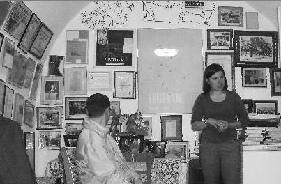
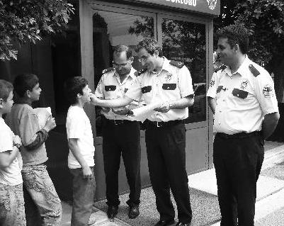

Tüm Kapadokya çok üzülür, kendi adının verildiği sokakta küçük bir müze[2] yaparlar Mustafa Güzelgöz ve eşeğini hatırlatmak için.

Fotoğraf: Celal Bayraktar
Girişimcilik ne biliyor musun?
Bulunduğun yere yenilik katmalısın.
Mutlaka adım atmalısın.
Yaptığın iş olduğu yerde durup duruyorsa, sende bir uyuzluk vardır arkadaş.
İnsan var, dokunduğu yere değer katar;
İnsan var, dokunduğu yere değer kaybettirir.
Bakın Nevşehir'den ve bu ülkeden nice müdür, amir, vali, bürokrat, milletvekili, politikacı geçti; binlercesinin adını kimse hatırlamaz ama Mustafa Güzelgöz ve eşeğinin müzesi var.
Sözün özü, bunlar gibi devlet adamı olacağına, böyle eşek ol, daha iyi.
Geçenlerde bir gazete haberi vardı: Altı polis müdürü, müdürlükten alınıp bir karakola sürülmüşler. "Bir odada altı müdür, yazık değil mi?" falan yazıyordu. Adamlarla konuşmuşlar, "Hakkımız yendi, aylardır buraya geliyoruz, bir şey yapmadan oturmak zorunda kalıyoruz" diyorlar. Böyle on binlerce devlet memuru var şu anda. Aybaşında maaşlarını çekiyorlar, ne mesaiye gidiyorlar, ne bir iş yapıyorlar.
Oysa o karakolun yanındaki mahallede eğitime ihtiyacı olan çocuklar vardır. Bir yan mahallede kömür bulamayan fakir, caddede yiyeceği ekmek için yardım bekleyen teyze vardır. Hiçbir halt yiyemiyorsan, yediğin meyvenin kül tablasına tükürdüğün çekirdeğini gidip toprağa diker, sularsın. Ülke bir ağaç kazanır. Bizim Mustafa Amca'yı sürselerdi o karakola, tüm civarı cennet yapardı. Bunlarsa şikâyet ederler, "Bizim hakkımızı yiyorlar" diye.
Ben size başka bir polisi, Emniyet Müdür Yardımcısı Akif Aktuğ'u anlatayım. Bulunduğu bölge Antalya'nın Güneydoğu'dan en çok göç alan bölgesi. Hemen yakınlarında bir okul var, küçücük ilköğretim çocukları ikinci, üçüncü sınıftan itibaren törenlerde İstiklal Marşı'nı söylemiyorlar, çünkü PKK varoşlarda bu çocuklara propaganda yaptırıyor. Karakolun yanından geçen minnacık çocukları çay içmeye davet ediyorlar, çocuklar "Sorguya mı alacaksınız?" diye soruyorlar. O yaştaki bir çocuğun "sorgu"nun ne olduğunu bilmesine imkân yok, belli ki eğitimden geçiyorlar. Okulda öğretmenler disiplinsizlikten ders yapamıyorlar. Nevruzda ufacık çocuklar arkalarında korkak teröristlerle karakolu taşlıyorlar. Çocuklara adam başı üç lira, dört lira harçlık veriyorlar, taş atsınlar diye.
Akif "Ne yapabilirim?" diye düşünüyor.
Bir gün çocukları eve gelince bakıyor ki ellerinde bazı kartlar var.
– Bunlar ne oğlum?
– Baba bunları biriktirince bize bedava menü veriyorlar.
– Ne menüsü?
– Dört kartın varsa bedava hamburger, içecek, vs.
Akif'in beyninde bir kıvılcım çakıyor. Mesai arkadaşlarıyla, müdürleriyle, as adamlarıyla konuşuyor ve bir proje başlatıyor: Polikart.
Polislere de eğitim veriliyor ve Antalya'da proje başlıyor. Mat- baalarda on binlerce kart basılıyor. Çocukların her iyi davranışı için ayrı bir kart. Bir çocuk kırmızı ışıkta mı bekliyor, bir polis memuru gelip bir polikart veriyor. Çocuk birine mi yardım etti, hemen bir polikart. Okuldaki öğretmenler dersi iyi dinleyen, ödev yapan çocuklara polikart veriyorlar.
Yavaş yavaş okulun havası değişmeye başlıyor.
On kart biriktirene bir polikart anahtarlığı, yirmi biriktirene bileklik, otuza tişört.
Kampanya çocukların çok hoşuna gidiyor.
Karakola Türk bayrağı resmi getirip "Ben çizdim polis amca" deyip polikart alan çocuklar var. Eskiden korkutuldukları karakolda polis amcalarıyla çay içmeye başlıyorlar. Öğretmenler çok memnun, ceza vermeden, bağırmadan şahane ders yapmaya başlıyorlar. Çocuklar da iyi davranışlar göstermeye alışıyorlar. İstiklal Marşı gümbür gümbür söyleniyor.
Nevruz yaklaşırken, birkaç tanesi Akif Amcalarının odasına çay içmeye geliyor.
Akif soruyor:

– Çocuklar, Nevruz'da yine taş atacak mısınız karakola?
Bir sessizlik.
– Akif Amca sen arkada dursan olmaz mı?
Akif kah kah gülüyor.
Sizin anlayacağınız zorla attırıyorlar o çocuklara o taşları, böyle polisler olduğu sürece önüne geçeriz kötülüğün. "Bizi karakola sürdüler, üç aydır boş oturuyoruz" diyen adamlar sayesinde değil.
Rahat, bir adamın kıçına biraz batmalı arkadaş.
Aldığın maaşın hakkını vermelisin.
Anadolu'nun bir köyüne ilk meyve ağacı 1960'larda dikilmiş, köy yüzlerce yıllık ama kimse uğraşıp didinip de bir meyve ağacı dikmemiş.
Köyün adı Sivrialan, Sivas'ın Şarkışla ilçesine bağlı.
Ağacı dikense Âşık Veysel!
Binlerce adam yaşamış, göçmüş o köyden.
İlk meyve ağacını dikenin gözleri görmüyor.
Sizce kimin gözleri görmüyor?
Eğer bulunduğunuz ülkeye, iş yerine, etrafınızdaki insanlara gram katkınız olmuyorsa "Acaba benim gözler görüyor mu?" diye sorun kendinize.
O yüzden hepimiz gurur duyuyoruz Hayrettin Karaca'yla, milyonlarca palamut ağacı dikti ülkeye. (Doğrusu meşe ağacıdır ama onu palamut ağacı sanan canım gibi sevdiğim bir kankam vardı, başka varsa diye yazıyorum.)
Ülkenin en iyi kazak fabrikasının sahibiydi, yıllardır yırtık pırtık aynı kazağı giyer, aklı ülkesine dikeceği yeni bir ağaçtadır.
Ben size Hayrettin Karaca olun, demiyorum.
Ondan bir tane var.
Ama TEMA gönüllüsü olabilirsiniz, LÖSEV'e, Kızılay'a, TUP'a destek verebilirsiniz.
Dokunduğunuz her yere değer katabilirsiniz.
Ve 116 milyar insanın başına geldiği gibi bu dünyadan göçüp giderken en azından, gökyüzünden şöyle bir aşağıya bakıp "Benim de bir katkım oldu, Allah'a şükür" diyebilirsiniz.
Yoksa çok mahzun gidersiniz.
Mustafa Güzelgöz Amca'nın eşeği kadar bile değeriniz olmaz.
Cidden.
Adım atın, küçücük de olsa bir adım.
Etrafınıza bir faydanız olsun.
Spartalı anneler kahraman kadın savaşçılardır ve eski Yunan'da çocuklarına ilk askerlik eğitimlerini onlar verir.
"Kılıcım kısa" diye yakınıp duran çocuğuna, Spartalı anne, "İleri bir adım atmayı neden denemiyorsun?" der.
Ben ilk girişimcilik dersimi anneanne-babaanne ikilisinden aldım. Al Bano-Romina Power gibilerdi maşallah. Al-Romina ayrıldı, bizimkiler hiç ayrılmadı; nasıl severlerdi birbirlerini... İkisinin boylarını toplasan 2,5 metre etmezdi.
İlk sürtüşmeleri benim yüzümden olmuştur.
Nasıl mı?
Hikâyeye bakın şimdi, süper.
Yaz tatili, 6-7 yaşlarındayım. 1972 diyelim, o zamanlar Türkiye müthiş gelişmiş. Nereden biliyorum? Tatil köyü diye bir şey yok, ama tatil kasabası var: Demirci.
Benim hem anne, hem baba tarafım Demircili. Yaz tatillerinde bizi Demirci'ye götürüyorlar; açık büfe, her türlü içecek dâhil, "all inclusive"! Akrabalarda her tür animasyon gani, süper güler yüz, 0-80 yaş çocuk ücretsiz. Ne ararsan var.
Bir iki hafta geçti, anneannem:
– Şerif, hayatta en çok ne istiyorsun?
– Bisiklet, dedim. Belki alır diye de içimden geçirdim.
– Kolay o.
– Nasıl anneanne?
– Ben sana bir dua öğreteceğim, Fatiha.
– ?
– Onu oku, Allah'a ne istiyorsan söyle, senin iş olur.
Ben sadece yutkunabildim. Körün istediği bir göz, Allah verdi iki göz. Düşünsenize şişedeki cini ümüğünden ele geçirmişsiniz, sadece bisiklet değil ne istesen verir artık.
Salona girdim, mutfağın hemen solundaki odanın soluk yeşil boyalı penceresinin altındaki sedir var ya, oraya oturduk. ("Niye odayı tarif etti, bilmiyoruz ki zaten evi" diyorsunuz ya, ben de size anlatmıyorum zaten, teyzemlere anlatıyorum, Allah Allah) Anneannem söyledi, ben konsantre meyve suyu gibi dikkatle tekrarladım. Öğrendim.
– Oku bakalım, iste isteyeceğini.
– Arada duvar olmasın anneanne, deyip fırladım odadan.
Hemen solumdaki mutfakta bulunan tel dolaptaki vişne reçelinin önünde mola bile vermeden geçtim, zorlanarak açtım balkonu, demir parmaklıklara dayandım, koruklara sarkmadan (buraları hep teyzemgile anlatıyorum kardeşim, sıkıldıysan bana ne) kaldırdım küçük yumuk ellerimi yukarı, diktim gözlerimi gökyüzüne:
– Allah'ım, bu vitesli Belde Pololar var ya, onlardan lazım bir tane, bal rengi, dedim ve çaktım Fatiha'yı. Akşam babamı bekliyorum, geldi.
– Baba bana bir şey aldın mı?
– Yoo...
– Hiç mi bir şey almadın?
– Yoo...
– Allah Allah!
Hızla mutfağa bir koşu.
– Anneanne bisiklet falan yok.
– Kaç Fatiha okudun sen?
– Bir.
– Bir taneyle olur mu hiç? Yatarken yedi tane oku!
Bu sefer daha gergin bir diyalog oldu: "Allah'ım o bisiklet işi vardı ya, hani göndermedin altı Fatiha için. Belde Polo olacak, vitesli, bal rengi..."
Ben yatarken yedi+bir okudum risk falan olmasın diye, yine bisiklet yok. Ben anneannemin ekstra gazlarıyla yine okuyorum, birkaç gün sonra babaannem gördü bahçede:
– Ne yapıyorsun havuzun başında?
Ben bu arada, haziran sıcağı, Figani Efendi eriklerinin altında hem serin serin oynuyorum hem dua okuyorum.
– Dua ediyorum babaanne.
– Ne duası?
– Fatiha okuyorum, Allah bisiklet verecek de...
– Kim öğretti sana bunu?
– Anneannem.
Babaannem merdivenden alt bahçeye doğru yürürken: "Töv- be tövbe ‘el ham' okumaya Allah bisiklet mi verirmiş? Batıl inanca bak" dedi ve o küçücük gövdesini yuvarlaya yuvarlaya kayboldu.
Ben son anda hinnap ağacının dalları arasından küçük, siyah bir dumancığın kaybolduğunu gördüm. Yani sizin Lost seyrederken yaşadığınız sahneyi ben 1972'de yaşamışım arkadaş. Ben seyretmedim Lost diyen varsa, teyzemler de seyretmedi, diyorum. Ben şaşkınlıkla o küçük, badem gözlü, siyah oğlağın peşinden koştum. Büyük papaz eriğinin altında buldum keçiciği.
– Babaanne vermez mi?